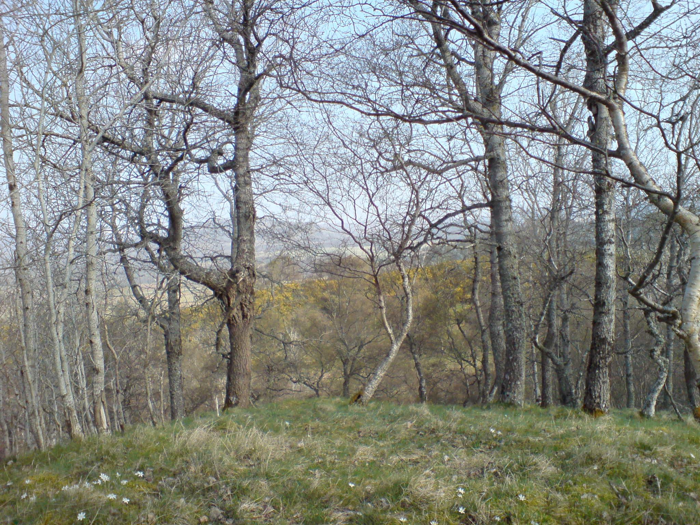
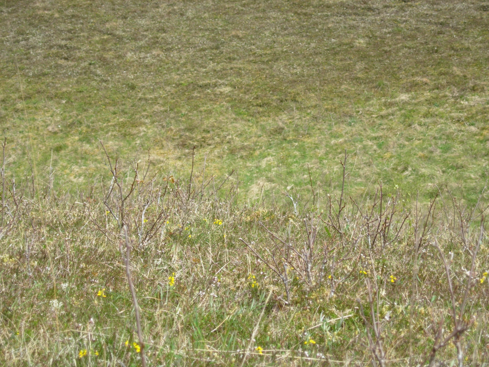
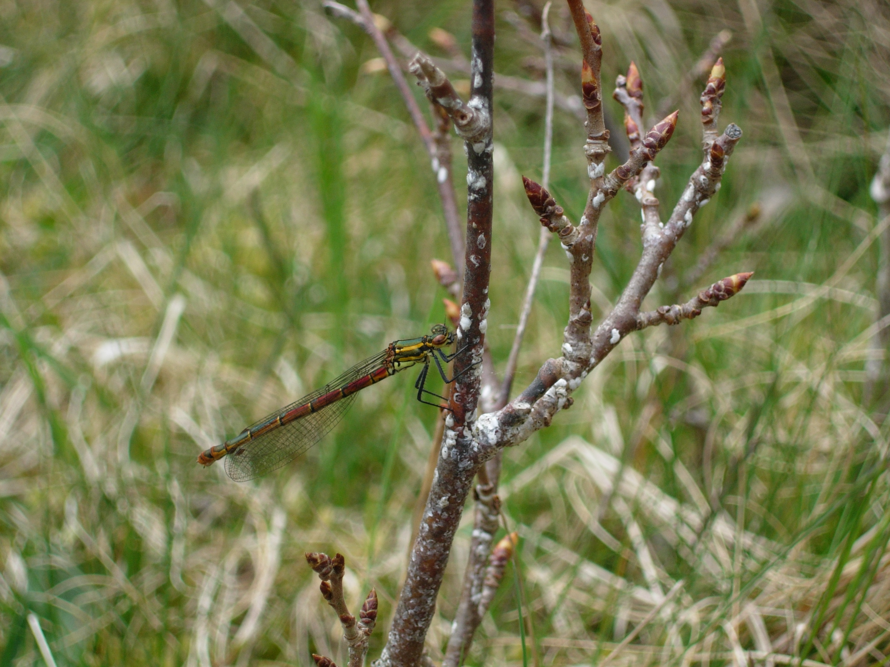

4 Populus tremula as a study system
An ideal system for achieving this objective comprises the foundation tree, aspen (Populus tremula), and its dependent community of epiphytic lichens and bryophytes. Aspen is a particularly suitable foundation species to study because it is known to show extensive genetic variation within Scotland (Easton 1998). It also has the important attribute of reproducing clonally from suckers. Thus, there are replicate stems possessing the same genotype within a population. This makes it possible to test the significance of differences in phenotypic traits and dependent communities among genotypes within natural populations, using multiple stems per genotype to demonstrate genetic variation. Associated with aspen as dependent species is a particularly rich and important lichen and bryophyte flora with conservation interest (Ellis and Coppins 2006). More than 300 lichen species have been recorded on Scottish aspen (B. J. Coppins & C. J. Ellis, unpublished data). Of these species, twenty-one are Nationally Scarce (recorded in only 16-100 10km squares); twelve are Nationally Rare (recorded in only 15 or fewer 10km squares); three species are listed on Schedule 8 of the Wildlife and Countryside Act 19811; five species are Red Data Book listed (Vulnerable); two species are Red Data Book listed (Critically Endangered) (Street & Street in Cosgrove and Amphlett 2001). One species, the aspen specialist Lecanora populicola, was Red Data Book listed (Extinct) until circa 2003 when it was discovered in abundance on aspen in Strathspey (Ellis, pers. comm.). Aspen in Scotland is an important habitat for epiphytic bryophytes (Rothero, G in Cosgrove and Amphlett 2001). Approximately five species of liverwort and twenty-nine species of moss have been recorded on aspen in Scotland. Most noteworthy are those belonging to the genus Orthotrichum. This genus comprises a group of nationally scarce ‘pin-cushion’ mosses that can grow in ‘tufts’ longitudinally on tree trunks. Aspen has been found to host several species of this genus, most notably O. gymnostomum. The related species, O. obtusifolium is Schedule 8 listed and found on several natural aspen stands in the Strathspey area. Furthermore, aspen in Strathspey are the ‘centre of distribution for the nationally rare Orthotrichum speciosum’.
Aspen is a foundation species for lichens and bryophytes because it provides the habitat where these epiphytes grow. Specific physical traits of aspen that will influence the habitat relevant to epiphytes are bark texture and bark secondary chemistry. The latter trait is known to have defensive properties and there exists potential for interaction between bark chemistry and epiphytic community structure. In this thesis the objective will be to explore the aspen/epiphyte system to establish:
Whether there are differences among aspen clones in important aspects of phenotype such as bark texture and bark chemistry;
Whether there are differences among clones in epiphytic communities of lichens and bryophytes, and
Whether the measured aspects of aspen phenotype are the cause of any observed differences in epiphyte communities.
4.1 Aspen biology, distribution and ecology
Populus tremula L. is a native deciduous tree in the Salicaceae family, with a distribution across Europe (including Britain), North Africa, through temperate Asia and Japan (Brickell, 1999; MacKenzie, 2010). In Scotland, aspen is found in the small areas of the northeastern Highlands (Strathspey). The BSBI hectad distribution map for aspen shows it as being widespread (Figure 4.1); in reality it is only locally abundant at certain sites, with large populations in Strathspey being unusual in Britain (C. Ellis, pers. comm.).
_mod.png)
Aspen trees can reach heights of up to 24m (Clapham, Tutin, and Warburg 1968; Stace 1997), with pale, greenish-grey bark appearing very smooth on young trees with dark grey diamond-shaped lenticels, becoming dark grey and fissured on older trees. Suckering is common in this species, though may vary depending on the clone. Bark is photosynthetic, sometimes with a whitish or grey bloom of periderm cells in a constant state of being sloughed off (Covington 1975), as illustrated in Figure 4.2.

Buds are generally glabrous, sometimes with a sticky residue. Leaves of mature shoots are 2.5-6cm, orbicular and generally rounded at the base with serrated edges. Initially leaves are pubescent but becoming glabrous with age; petioles are flattened, giving rise to the characteristic fluttering of the leaves in wind. Leaves of suckering shoots can be up to 15cm, ovate to cordate with greyish pubescence on the underside. The flowers are wind-pollinated catkins produced in early spring before the new leaves appear; they are dioecious, with male and female catkins on different trees. The male catkins are patterned green and brown, 5–10 cm long when shedding pollen; the female catkins are green, 2-4 cm long at pollination, maturing in early summer to bear 10–20 capsules each containing numerous tiny seeds embedded in downy fluff. The fluff assists wind dispersal of the seeds when the capsules split open at maturity. Aspen usually flowers from February to March, and is dioecious having male and female flowers on separate trees. Flowering events are rare in locations where summers are cool, but not unknown, therefore trees may have adapted to reproduce vegetatively by suckers. Examples of mature aspen and aspen suckers are shown in Figure 4.3, a-c.



A clonal patch is referred to as a ‘genet’, with each individual stem known as a ‘ramet’. Ramets of suckering Populus spp. are initially dependent upon the main rootstock for translocation of all nutrients, solutes and hormones, but will eventually become independent and form their own rootstocks (Barnes 1966). Within a genet many suckers may be generated, but not all will survive, and as they die off their roots can decay leaving surviving suckers with root systems largely or entirely independent of the root system it originated from; independence varies across genotypes, but can occur as early as 8 years from initial development (Shepperd 1993), up to 25 years (Barnes 1966). Evidence for whether ramets remain interconnected or not varies significantly, and may be dependent on disturbance from fire and burrowing/ grazing mammals damaging the root connections (Cottam 1954; De Byle 1964; DesRochers and Lieffers 2001). The average lifespan of a ramet is estimated to be less than 80 years (Bean 1976), though ages of up to 150 years have been suggested for populations in the Highlands of Scotland (Macgowan 1997). Pollen records indicate that aspen has been present in the UK since ca. 9000 years BP, though it is unknown whether the current populations arrived here after the end of the last glacial period, or if they are relicts of a pre-ice age community (Mackenzie 2010). Aspen is tolerant of a wide range of soils and environmental conditions (Brickell and Royal Horticultural Society (Great Britain) 1999), and has many uses in horticulture (i.e., shelterbelts: Bean 1976), and forestry (pulp, timber, biofuel: Johansson 2002).
Despite being fragmented and poorly represented in woodlands, aspen has been recognised as being of high conservation value, due to the high diversity of associated species, including epiphytic lichens and bryophytes. Thirty-nine insect species have been recorded on aspen, including 14 Red Data Book species, three of which are Category 1 (endangered) (Rotheray, G in Cosgrove and Amphlett 2001) . The rare aspen hoverfly (Hammerschmidtia ferruginea) is a UK Biodversity Action Plan (BAP) Priority species, and has been recorded in abundance on rotting aspen logs (Rotheray, G in Parrott and MacKenzie 2009). Up to 43 Lepidopteran species have been recorded on aspen in Scotland, 17 of which are aspen-specialists (Prescott & Stubbs in Parrott and MacKenzie 2009). The larvae of one rare species in particular, the Dark-bordered Beauty moth (Epione vespertaria), feeds exclusively on the young leaves of suckering aspen and therefore its survival is intimately linked with the presence of aspen in the landscape.
4.1.1 Variation within aspen
Due to its reproductive strategy, many Populus spp., including Scottish aspen (Populus tremula), develop into clonal patches of various sizes. Clones correspond to different genotypes that vary for a range of physical and physiological traits, such as phenology (Yu, Tigerstedt, and Haapanen 2001), nutrient storage (Yu, Tigerstedt, and Haapanen 2001; R. L. Lindroth et al. 2002; Donaldson et al. 2006; Osier and Lindroth 2006), chemical defences (Richard L. Lindroth and Hwang 1996; Orians, Roche, and Fritz 1996; Osier and Lindroth 2001, 2004, 2006; R. L. Lindroth et al. 2002; Donaldson et al. 2006; Donaldson and Lindroth 2007), biomass production (Rytter and Stener 2003; Christersson 2006) and leaf litter decomposition (Madritch, Donaldson, and Lindroth 2006).
Protected from intentional picking, uprooting or destruction↩︎